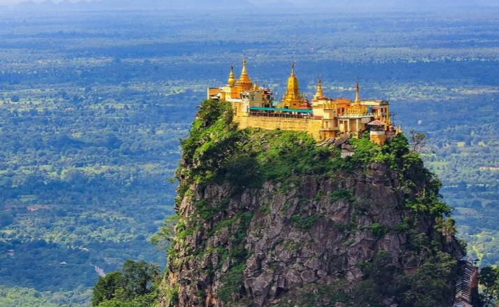

Scientific studies indicate that Mount Popa's most recent confirmed eruption occurred approximately 8,000 years ago, around 6050 BCE. Mount Popa, located in central Myanmar, is a dormant stratovolcano rising 1,518 meters above sea level. While there are legends suggesting an eruption in 442 BCE, there is no geological evidence to confirm this event. The 6050 BCE eruption remains the last known significant volcanic activity of Mount Popa. Mount Popa holds immense cultural importance in Myanmar. It is considered the center of nat worship, housing numerous temples and relic sites atop the mountain.
